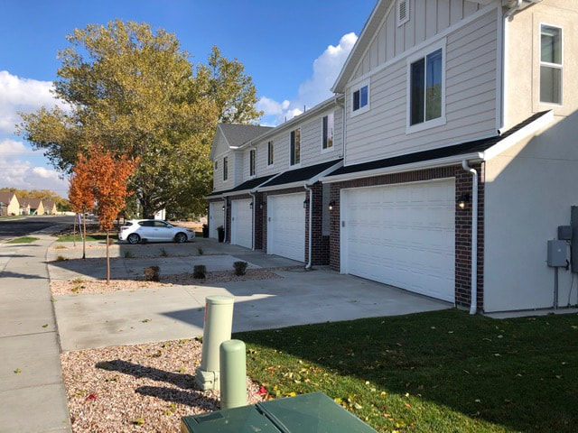

Sycamore
Location:
Sycamore is ideally situated in West Haven, offering residents the perfect blend of suburban charm and urban accessibility. With its prime location, you'll find that you're never far from the amenities and opportunities of city life. Green Spaces and Recreation: Sycamore takes pride in its commitment to nature and recreation. The community features a beautiful park, creating a lush, inviting environment for residents to relax, socialize, and enjoy the outdoors. Additionally, pickleball courts are available for those seeking active and engaging pastimes.
Townhome Living:
This meticulously planned community features 135 thoughtfully designed townhomes. Whether you're seeking a cozy abode or spacious living quarters, Sycamore offers a range of options to suit your needs and preferences. Green Spaces and Recreation: Sycamore takes pride in its commitment to nature and recreation. The community features a beautiful park, creating a lush, inviting environment for residents to relax, socialize, and enjoy the outdoors. Additionally, pickleball courts are available for those seeking active and engaging pastimes.
Green Spaces and Recreation:
Sycamore takes pride in its commitment to nature and recreation. The community features a beautiful park, creating a lush, inviting environment for residents to relax, socialize, and enjoy the outdoors. Additionally, pickleball courts are available for those seeking active and engaging pastimes.